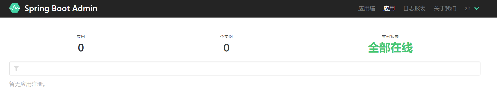

Spring Boot Admin管理和监控Spring Boot应用程序
spring-boot-admin 管理
Spring Boot Admin是一个管理和监控Spring Boot应用程序的开源监控软件，针对spring-boot的actuator接口进行UI美化并封装，可以在管理界面中浏览所有被监控spring-boot项目的基本信息，详细的Health信息、内存信息、JVM信息、垃圾回收信息、各种配置信息（比如数据源、缓存列表和命中率）等，还可以直接修改logger的level，Spring Boot Admin提供的丰富详细的监控信息给Spring Boot应用的监控、维护和优化都带来了极大的便利
1. 创建服务端项目
创建一个maven项目,添加Spring Boot Admin依赖
1
2
3
4
5
6
7
8
9
10
11
12
13
14
| <dependency>
<groupId>org.springframework.boot</groupId>
<artifactId>spring-boot-starter</artifactId>
</dependency>
<dependency>
<groupId>de.codecentric</groupId>
<artifactId>spring-boot-admin-server</artifactId>
<version>2.2.1</version>
</dependency>
<dependency>
<groupId>de.codecentric</groupId>
<artifactId>spring-boot-admin-server-ui</artifactId>
<version>2.2.1</version>
</dependency>
|
2. 添加配置
1
2
3
4
5
| server:
port: 8083
spring:
application:
name: monitor
|
3. 添加启动注解
在启动类中添加使用spring-boot-admin监控的@EnableAdminServer注解
1
2
3
4
5
6
7
8
9
| @SpringBootApplication
@EnableAdminServer
public class MonitorApplication {
public static void main(String[] args) {
SpringApplication.run(MonitorApplication.class, args);
}
}
|
4. 启动项目
访问http://localhost:8083/就可以看到监控页面

5. 添加需要监控的项目
在需要被监控的项目中添加依赖
例如要监控 admin项目,就在admin项目的pom文件中添加
1
2
3
4
5
| <dependency>
<groupId>de.codecentric</groupId>
<artifactId>spring-boot-admin-starter-client</artifactId>
<version>2.2.1</version>
</dependency>
|
添加配置
url为服务端也就是monitor项目的地址
1
2
3
4
5
6
7
8
9
10
11
12
| spring:
application:
name: admin
boot:
admin:
client:
url: "http://localhost:8083"
management:
endpoints:
web:
exposure:
include: "*"
|
再启动admin项目就可以看到有一个项目在线了.可以点进去查看更多的信息